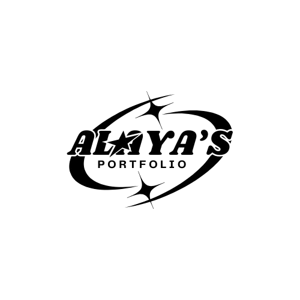
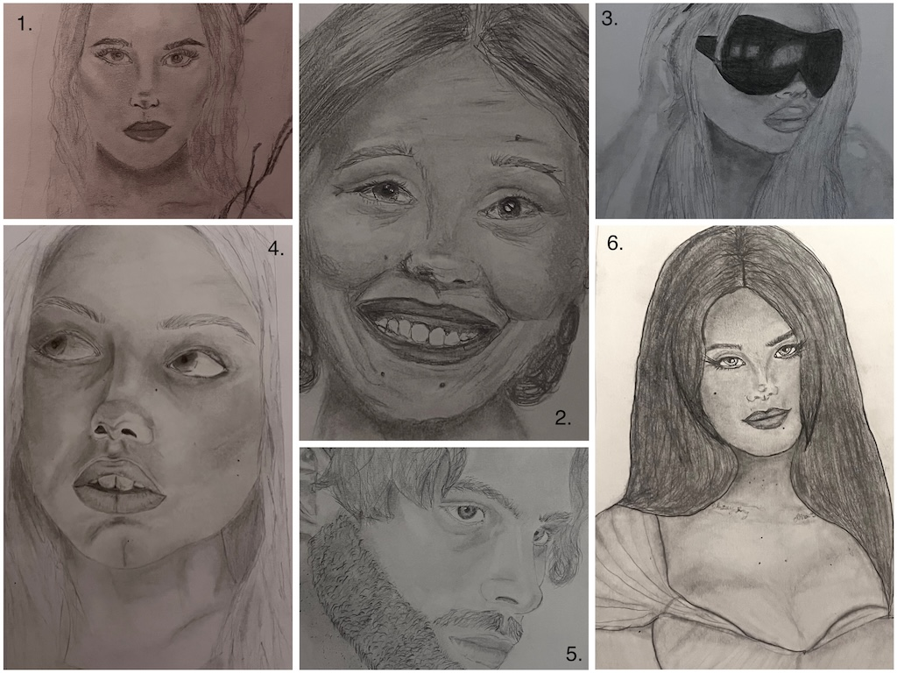
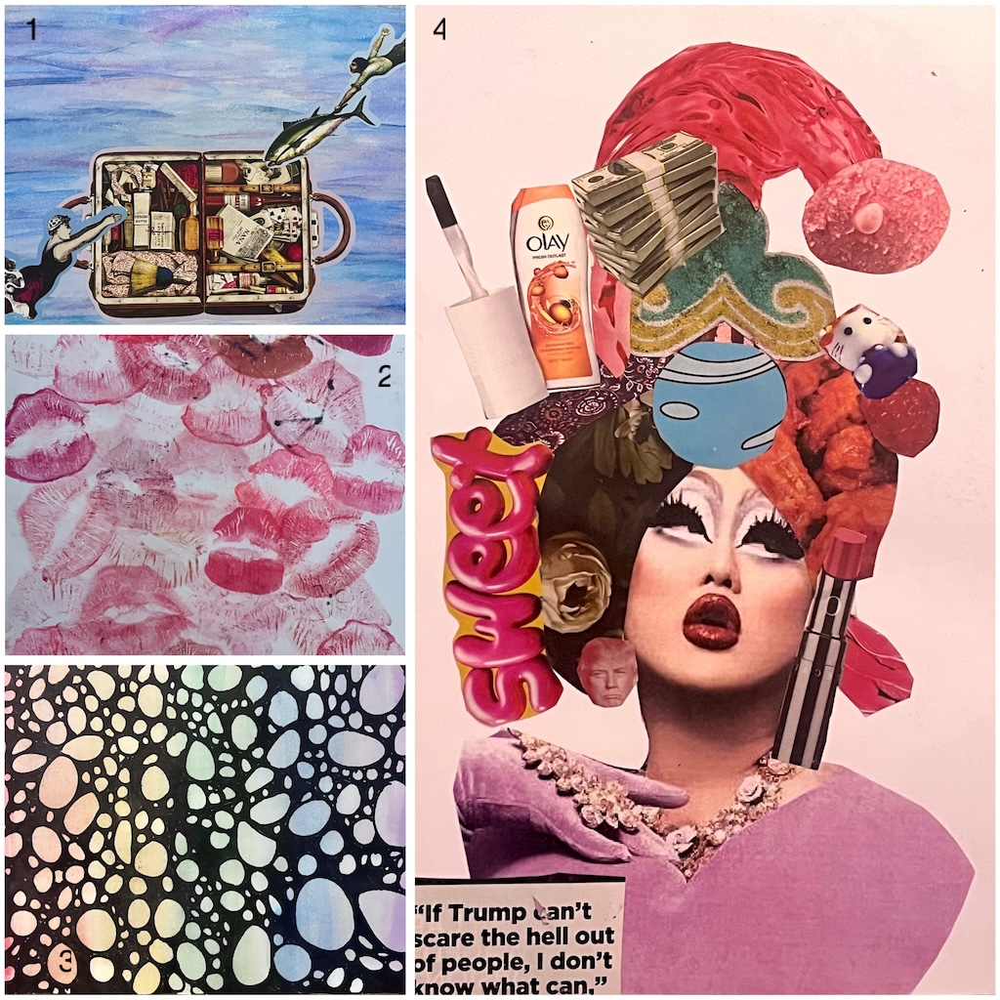
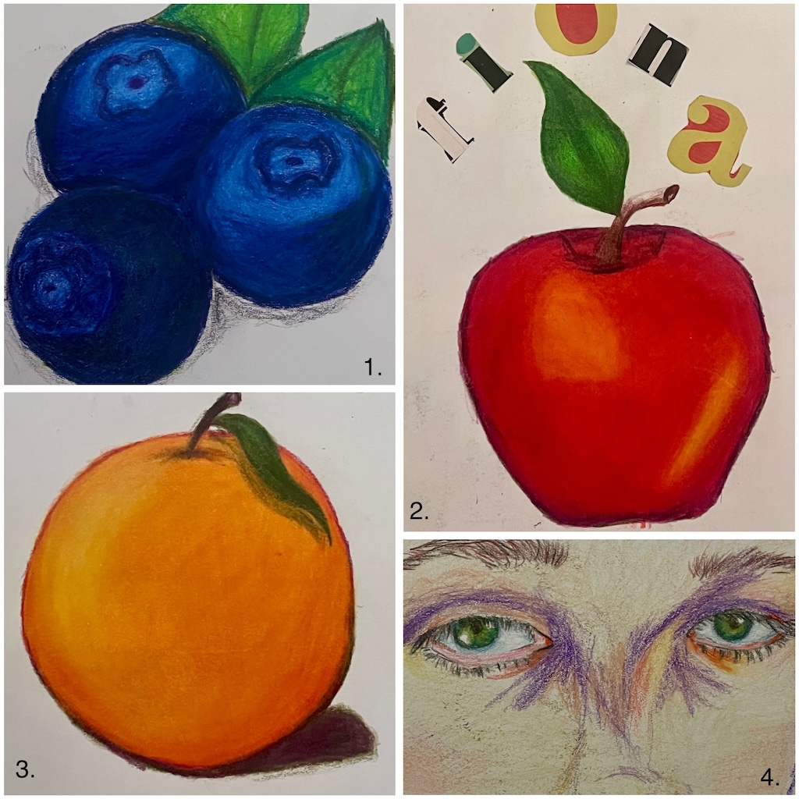

1. Lana del Rey pictured at the 2024 Met Gala
2. Mia Goth in “Pearl” end-credits screen
3. Trisha Pastas from video “$750 T-shirt VS $750 Chanel Sunglasses"
4. Hannah Murray as Cassie Ainsworth in TV-show “Skins UK”
5. Luke Hemmings for Euphoria magazine
6. Lana del Rey at Elton John’s 2016 Oscar’s party

1. Swimmers "diving" into suitcase in the ocean, surrealism inspired collage made with watercolor and stickers.
2. Collage of lipstick swatches, the purpose of this piece was to hold onto the memories I've made wearing each shade, without holding onto expired product.
3. Experimentation with neurographic art, a form of art therapy that promotes mindfulness. This piece was made with Sharpie and watercolors.
4. Political commentary on the right-wing movement to ban drag. The main image is of artist Kim Chi, many of the other images represent their personal style. I used magazine clippings for this.

1. Cluster of blueberries, done with Prismacolor pencils
2. Red apple also done with Prismacolor, above, the "fiona" is in reference to singer Fiona Apple, this portion is magazine clippings.
3. Orange done with Prismacolor pencils
4. Close up of model/influencer Emma Chamberlain's eyes. Done with Prismacolor pencils